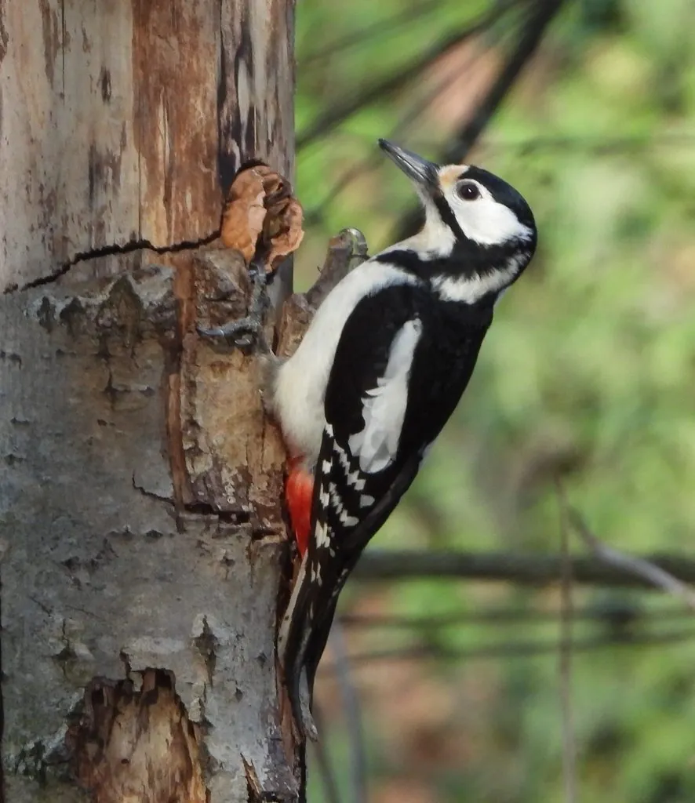

鸟类 · 动物界
大斑啄木鸟 Dendrocopos major

黑白羽色配红色尾下覆羽的常见啄木鸟，能用喙快速凿开树皮，靠长舌勾出树中的蛀虫，被称为“森林医生”。
- 分类
- 门脊索动物门纲鸟纲目䴕形目科啄木鸟科属啄木鸟属
- 栖息环境
- 针阔混交林、阔叶林、公园和果园，需要有枯木或老树可供凿洞
- 地理分布
- 欧亚大陆广泛分布，中国从东北、华北到西南的森林中均可见
- 保护级别
- IUCN 无危（LC）；中国“三有”保护动物
物种志
大斑啄木鸟体长 20–25 cm，翼展 34–39 cm，体重 60–90 g。上体以黑色为主，肩部有大块白斑，翅膀上有黑白相间的横斑，尾下覆羽是醒目的深红色，雄鸟后头还有一块红斑。它的喙粗壮如凿，尾羽坚硬，可以像撑杆一样抵住树干，让身体垂直攀附在树皮上。
大斑啄木鸟广泛分布于欧亚大陆，中国从东北、华北到西南的森林中都能见到。它主要取食藏在新伐木、枯木和树皮下的昆虫幼虫，也吃坚果、种子和浆果；秋季会把榛子、松子塞进树皮缝隙，用喙砸开取食，这些缝隙被称为“砧木”。每年 4–6 月凿树洞营巢，每窝产卵 4–7 枚，孵化 12–13 天。它们每秒可敲击树干 10 次以上，用于凿洞、觅食和宣示领地；头骨的特殊减震结构能保护大脑。
形态与习性
- 食性树皮下的昆虫幼虫，也吃坚果、种子和浆果
- 体长20–25 cm
- 翼展34–39 cm
- 体重60–90 g
- 繁殖凿树洞营巢，每窝 4–7 枚卵，孵化 12–13 天
- 敲击每秒可敲击树干 10 次以上，用于凿洞和宣示领域
- 寿命野外约 5–10 年
趣味知识
- 啄木鸟每天可敲击树干上万次，头骨有特殊的减震结构保护大脑。
- 大斑啄木鸟会把榛子、松子塞进树皮缝隙，用喙砸开取食，这些位置被称为“砧木”。
- 它的舌头细长且带倒刺和黏液，可以深入虫道把幼虫勾出来。
- 尾羽坚硬如撑杆，使它能垂直攀附在树干上凿木。